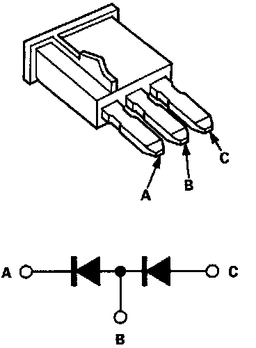

Compressor Clutch Diode HVAC: Testing and Inspection
Diode TestNOTE: The diode is designed to pass current in one direction while blocking it in the opposite direction. Use an analog ohmmeter, or a digital ohmmeter equipped with a diode tester.

Check for current flow in both directions between the A and B, and B and C terminals. There should be current flow in only one direction.